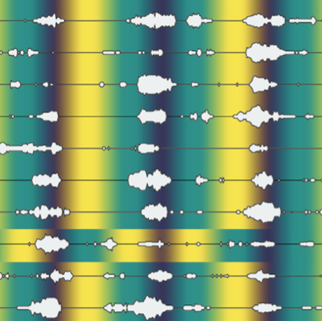
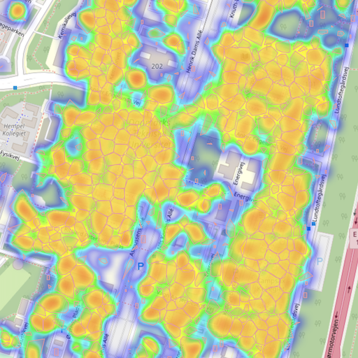
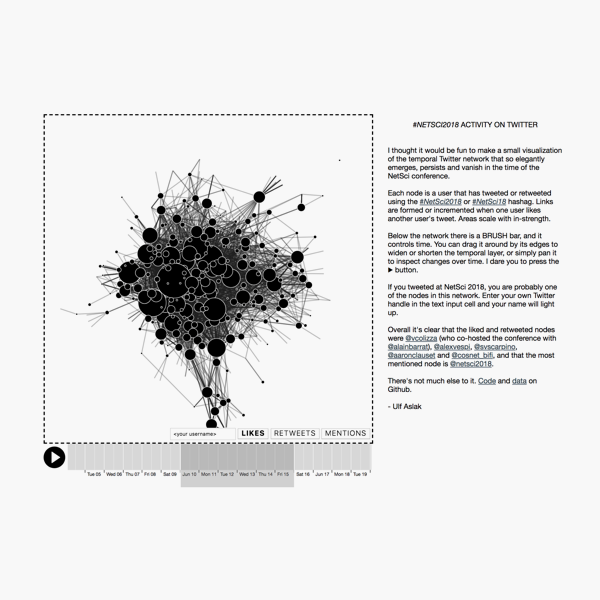

Ulf Aslak
About
Blog
CV
Codes
Publications
Vent
2019
nbopen
minimal

Intermittent brain communities

Infostop
Twitter network logger
2018
Network yo face!
Netwulf

Science Twitter in motion
2017
Friends' friends
Community detection in temporal networks
2016
Archetypal analysis in Python